記事・リンクを検索
⌘K
36 件のポスト

リアルタイムレンダリングにおけるTriplanarマッピングの計算負荷（LinkedInの投稿を引用して紹介）。UV展開が不要で便利だが、サンプル数が3倍になる分のコストは単純比例せず、L1/L2キャッシュの挙動に左右されるという技術的な補足がある。

Triplanarの計算負荷への対応策として、面の向きに応じてplanar projection（地面など上向きの面）とbiplanar projection（建物など横向きの面）を選択的に使い分けるという手法。

Blade Runner風のシーン「Prison 2049」と宇宙を舞台にしたCGアニメーションについて、コンポジットとグレーディングの工程を追う2本のブレイクダウン。
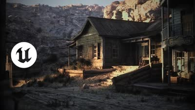
輝度と照度の違いから、PBL用のスカイマテリアルとスカイライト、屋内外の露出カーブまで、UE5の物理ベースライティングを順を追って解説する。

Blenderでシネマティックな大気感を作るチュートリアル。ライト、影、空の作り込みと、ポストプロダクションでの仕上げを扱う。
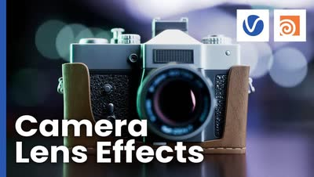
V-Ray for Houdiniの入門シリーズから、カメラの追加と設定、Houdiniの標準カメラのV-Ray Physical Cameraへの変換、レンズエフェクトを扱う回。

コントラストを活かした作品を集めた分析（毎日作品分析Day29）。

逆光（バックライト）を活かした作品を集めた分析（毎日作品分析Day20）。

薄暗い雰囲気の作品を2つのタイプに分けた分析（毎日作品分析Day19）。現実に存在しないものが神秘的な印象を与えるタイプと、日常的なものが恐怖や不安を掻き立てるタイプがあるという考察が記されている。
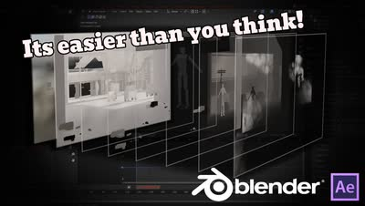
Blenderのレンダーレイヤーの考え方から、HoldoutとIndirectの違い、Blenderコンポジタとの連携、After Effectsでの合成までを扱う解説。
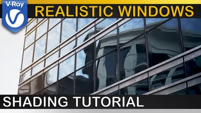
ベースシェーダから表面のばらつき、UVマッピング、歪み、汚れまで段階的に足していき、基本を超えた窓ガラスの質感を作るV-Rayのチュートリアル。

Christian Auer氏の作品「Fall Elegy」（毎日作品分析Day9）。夕方の温かい光と弱めのコントラストによって水彩画のような優しい印象を受けるという気づきが記されている。

フォトグラメトリの取り方、ジオメトリの最適化、アダプティブディスプレイスメント、ライティングまでを5分にまとめたマクロ表現のチュートリアル。
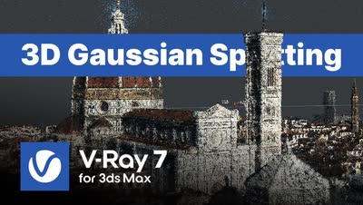
3Dガウシアンスプラッティングとは何か、V-Ray 7への読み込み方、VRayGaussiansGeomのパラメータやスケール確認・ライティングまでを扱う解説。

Blenderで作ったシネマティックな環境ショットの制作過程を、リファレンス集めからライティング・仕上げまで17分で解説したブレイクダウン。
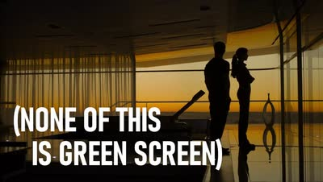
『オブリビオン』が、The Mandalorianに先立ってフロントプロジェクションで空中3000フィートのセットを撮影した手法を追った解説。
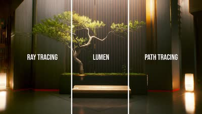
レイトレーシング、Lumen、パストレーシング、ラスタライズの違いと、それぞれの得手不得手を初心者向けに整理した19分の解説。

木の葉のレンダリング時間を、Geometry（16秒）、Stencil（27秒）、Opacity/Texture（2分35秒）の3手法で比較検証。Solarisでは、Scatterする場合はAlphaでモデルをカットアウトし、それ以外はOpacityなしで使うのが最適ではないかと考察している。

スキャッター内の個体を制御できる効率的なインスタンスシステムを作る回と、Solarisでシーンをゼロから組んでライティングする回の2本。

レンダラーごとに異なるノード名をまとめて比較できるサイト「Render Node Comparison」。レンダラーを切り替えた際にノード名がわからない時に便利。

AIを使ってClay Shaderをレンダリングする方法を解説した動画「The NEW Way To Use AI For 3D Artists」。CGが上手い人はAIの使い方も上手だという感想を添えている。
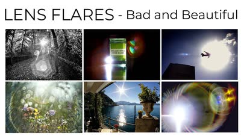
レンズがフレアを生む仕組みと、フレアの種類の違いを解説した動画。後半では実機のレンズをフレアの美しさで比較・ランク付けしている。
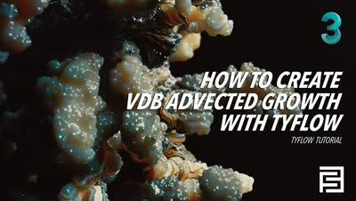
3ds MaxとtyFlowで、VDBを使って侵食するように広がっていくグロース表現を作るチュートリアル。
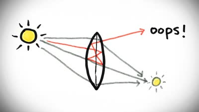
レンズフレアやゴーストがなぜ発生するのかを、光学的な仕組みから解説した5分の動画。日食の写真に写り込む虚像を題材にしている。

映画『モアナ2』の構図とライティングの分析（LinkedIn）。投稿者は他の映画についても分析している。
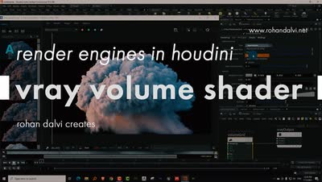
HoudiniにおけるV-Rayのボリュームシェーダの基本を扱うレッスン。Axiomソルバーと組み合わせる前提の内容。

Alex Toth氏によるSolarisとKarmaを使ったライティング・レンダリングのウェビナー「Master Lighting and Rendering in Houdini」。

V-Ray for Houdiniでのディスプレイスメント適用方法についてのTips。単一のDisplacementならobj階層でマテリアルをアサインし、複数のDisplacement Mapを使う場合はsop階層でPackしてからマテリアルをアサインする、という手順を解説している。
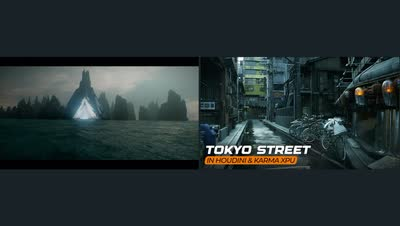
Redshiftでの海のレンダリングを扱うコースの紹介映像と、SolarisとMaterialXで東京の街並みを構築するDmitry Gromov氏の1時間半の講座。

Steffen Hampel氏が雪の道路シーンを制作したプロセスを解説した記事「Sunny winter Road scene using V-ray & Nuke」。

モデリングから全工程をカバーする背景制作チュートリアル「Arch Masterclass I: Mastering Environments with Vray」。

3ds Maxを使った背景制作のチュートリアル「Japanese River」。詳細な解説のため、3ds Maxを使っていなくても学べる内容が多いとしている。

CG Cinematographyのウェブサイトに掲載されているライティング技法の記事。主にCGアニメーション作品を扱っているが、様々なテクニックが紹介されている。

Houdini Solaris向けのライティングテンプレート。単一ショット用だけでなく複数ショット用のテンプレートもある。

Steffen Hampel氏による、「Japanese Alley」という作品を制作するWingfoxのチュートリアル。MayaとV-Rayがメインに使用されている。

Alexander Maltsev氏が受賞作「Mighty」をMegascansとCinema 4Dで作り、Octaneでレンダリング、Fusionで合成するまでを10パートで解説した40分の講座。